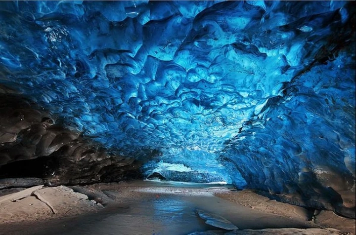
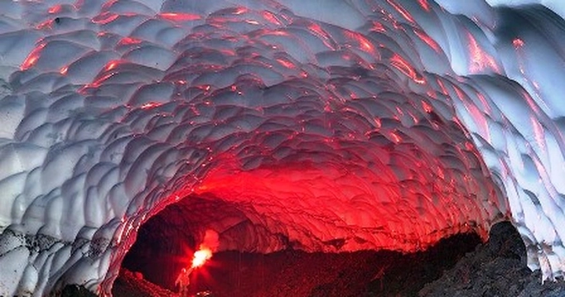
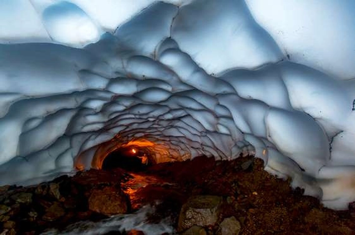
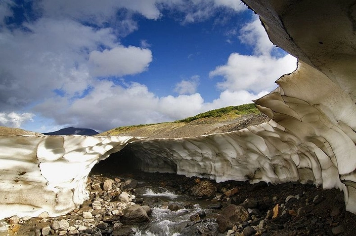

Khám phá hang băng Mutnovsky – kiệt tác thiên nhiên ở Kamchatka, Nga
Giữa bán đảo Kamchatka hoang sơ của Nga, nơi những ngọn núi lửa vẫn âm ỉ hơi thở của trái đất, tồn tại một tuyệt tác hiếm có: Hang băng Mutnovsky (Mutnovsky Ice Cave). Nằm dưới chân núi lửa cùng tên, hang là minh chứng ngoạn mục cho sự giao hòa giữa hai yếu tố tưởng chừng đối lập – nóng bỏng của dung nham và lạnh giá của băng tuyết. Nơi đây không chỉ là điểm đến của những nhà thám hiểm mà còn là giấc mơ của những nhiếp ảnh gia theo đuổi ánh sáng và sắc màu tự nhiên.
1. Vị trí địa lý và đặc điểm hình thành
Hang băng Mutnovsky (Mutnovsky Ice Cave) nằm dưới chân núi lửa Mutnovsky, thuộc bán đảo Kamchatka ở vùng Viễn Đông nước Nga – một trong những khu vực địa chất hoạt động mạnh mẽ nhất thế giới. Cách thành phố Petropavlovsk-Kamchatsky khoảng 70 km về phía nam, nơi đây được bao bọc bởi khung cảnh thiên nhiên hoang sơ, những thung lũng dung nham đen xám xen lẫn các dải tuyết trắng xóa quanh năm. Khu vực này thuộc quần thể Di sản Thế giới UNESCO “Volcanoes of Kamchatka”, nổi tiếng với hơn 300 ngọn núi lửa, trong đó khoảng 30 vẫn còn hoạt động.
Chính sự giao hòa khắc nghiệt giữa nhiệt độ cực thấp của vùng băng tuyết và nhiệt năng mạnh mẽ từ lòng đất đã tạo nên hang băng Mutnovsky – một trong những hiện tượng tự nhiên hiếm có trên hành tinh. Khi hơi nước nóng và dòng suối địa nhiệt chảy qua lớp băng dày bên sườn núi, chúng từ từ làm tan chảy và khoét rỗng phần băng bên dưới, hình thành nên những đường hầm băng rộng lớn và uốn cong mềm mại.

Điều đặc biệt là quá trình hình thành này liên tục biến đổi theo mùa, khiến cấu trúc hang không bao giờ giống nhau giữa hai năm. Bên trong, băng trong suốt phản chiếu ánh sáng tự nhiên tạo nên hiệu ứng quang học kỳ ảo, khi sắc xanh lam pha tím hòa quyện cùng ánh vàng của mặt trời xuyên qua lớp băng mỏng. Dưới nền hang, hơi nước ấm bốc lên từ lòng đất vẫn không ngừng bốc khói, tạo nên bức tranh đối lập hoàn hảo giữa băng giá và hơi nóng – giữa sự sống và hủy diệt.
Mutnovsky vì thế không chỉ là một điểm đến địa lý độc đáo, mà còn là minh chứng sống động cho sức mạnh sáng tạo của thiên nhiên, nơi hai yếu tố đối lập tưởng chừng không thể cùng tồn tại lại hòa quyện thành một tuyệt tác.
2. Cấu trúc kỳ diệu của hang băng
Hang băng Mutnovsky là một tuyệt tác điêu khắc sống của tự nhiên, nơi từng khối băng, từng vòm cong đều mang dấu ấn của thời gian và nhiệt năng địa chất. Vòm hang cao trung bình từ 10–15 mét, có nơi vươn tới gần 20 mét, tạo nên một không gian khổng lồ tựa như giáo đường bằng pha lê. Bên trong, ánh sáng mặt trời lọt qua các lỗ mở tự nhiên trên mái hang, xuyên qua hàng lớp băng mỏng, khúc xạ thành dải sắc màu chuyển động – từ xanh lam lạnh lẽo, đến tím sẫm, rồi ánh vàng dịu nhẹ như đang tan vào làn khói mờ.
Mỗi bước chân di chuyển đều mang lại cảm giác đang đi giữa một tác phẩm nghệ thuật thay đổi không ngừng. Vào mùa xuân và đầu hè, nước tan từ tuyết và băng chảy xuống tạo thành những dòng suối nhỏ len lỏi qua lòng hang, mài mòn và “điêu khắc” lại các mảng băng cũ. Đến mùa đông, khi nhiệt độ hạ thấp, các khối băng mới hình thành, kết tinh thành màn pha lê lung linh, tạo nên một diện mạo hoàn toàn khác. Chính sự biến hóa liên tục ấy khiến Mutnovsky trở thành một công trình nghệ thuật sống của thiên nhiên, không ai có thể chứng kiến cùng một vẻ đẹp hai lần.
3. Mối liên hệ đặc biệt với núi lửa Mutnovsky
Điều khiến Mutnovsky khác biệt so với mọi hang băng khác trên thế giới chính là mối liên kết mật thiết giữa băng và lửa. Hang được hình thành ngay dưới chân núi lửa Mutnovsky, một trong những ngọn núi lửa còn hoạt động mạnh nhất của Kamchatka. Dưới lòng đất, dòng dung nham và khí địa nhiệt vẫn không ngừng sôi sục, tạo ra hơi nóng khổng lồ thoát ra qua các khe nứt và suối nước nóng. Chính dòng hơi địa nhiệt này, khi tiếp xúc với lớp băng dày hàng chục mét bên trên, đã làm tan chảy từng phần và khoét rỗng cấu trúc băng, hình thành nên hệ thống đường hầm tự nhiên ngoạn mục.
Hiện tượng này được các nhà khoa học gọi là “địa hình lưỡng cực nhiệt – băng”, vì nó là kết quả của sự tương tác đối nghịch giữa hai yếu tố cực đoan nhất của Trái đất: nhiệt độ và băng giá. Không nơi nào khác, người ta có thể thấy sức mạnh của địa chất và thời tiết hòa quyện hoàn hảo như ở Mutnovsky – nơi hơi nước nóng bốc lên từ lòng núi lửa gặp băng giá nghìn năm, tạo nên khung cảnh vừa dữ dội, vừa yên bình. Đây là minh chứng hùng hồn cho khả năng sáng tạo vô biên của tự nhiên – khi lửa không chỉ hủy diệt mà còn kiến tạo nên vẻ đẹp vượt ngoài sức tưởng tượng.
4. Cảnh sắc kỳ ảo bên trong hang
Bước vào Mutnovsky, du khách có cảm giác như lạc vào một thế giới khác – nơi thời gian ngưng đọng và ánh sáng trở nên hữu hình. Bên trong hang, ánh mặt trời xuyên qua lớp băng dày tạo ra hiệu ứng quang học tựa cực quang, khiến không gian ngập tràn trong những mảng sáng di động – khi thì xanh lam lạnh buốt, khi thì tím sẫm bí ẩn, và có lúc rực lên sắc vàng như ánh bình minh trong lòng đất.

Trên trần hang, những khối băng trong suốt rủ xuống như chùm đèn pha lê khổng lồ, trong khi mặt đất bên dưới được phủ bởi lớp tuyết phản chiếu ánh sáng lung linh. Hơi nước mờ ảo bốc lên từ các khe nứt địa nhiệt, khiến cả không gian như đang thở và chuyển động. Mỗi tiếng giọt nước rơi vang vọng trong lòng hang nghe như tiếng nhạc của tự nhiên – chậm rãi, sâu lắng và đầy mê hoặc.
Khi ánh sáng thay đổi theo giờ trong ngày, màu sắc của hang cũng đổi theo: buổi sáng là ánh lam trong trẻo, buổi trưa rực rỡ như lửa, còn khi hoàng hôn đến, toàn bộ hang băng chìm trong ánh tím mơ hồ, huyền hoặc đến mức không thể tin là có thật. Nhiều du khách miêu tả cảm giác ấy như đang bước giữa ranh giới của giấc mơ và hiện thực, nơi con người chỉ biết im lặng trước sự vĩ đại của thiên nhiên.
5. Sự thay đổi theo mùa và thời tiết
Hang băng Mutnovsky không cố định — nó thay đổi diện mạo theo từng mùa, giống như một sinh thể sống. Vào cuối mùa hè (tháng 8 – 9), đây là thời điểm lý tưởng nhất để tham quan: băng vẫn giữ được cấu trúc vững chắc, trong khi đường núi bớt trơn trượt và thời tiết ấm áp hơn, ánh nắng dễ dàng xuyên qua các vòm băng, tạo nên hiệu ứng ánh sáng ngoạn mục nhất trong năm.
Sang mùa thu, những cơn gió lạnh đầu mùa thổi qua khiến hơi nước địa nhiệt đọng lại thành những lớp sương mờ, phủ lên bề mặt băng một làn hơi như khói mỏng, khiến toàn bộ không gian trở nên huyền ảo và siêu thực. Đến mùa đông, khu vực quanh Mutnovsky gần như bị cô lập hoàn toàn: tuyết phủ dày hàng mét, nhiệt độ có thể xuống dưới -30°C, và con đường dẫn lên núi lửa bị chặn bởi băng tuyết. Thời điểm này, hang gần như “ngủ đông” dưới lớp tuyết trắng xóa.

Đến mùa xuân, khi băng bắt đầu tan, áp lực từ hơi nước và dòng chảy bên trong khiến một số phần của hang có thể sụp đổ hoặc thay đổi hình dạng hoàn toàn, mở ra những đường hầm mới và làm biến mất những lối cũ. Vì thế, người dân địa phương thường nói rằng: “Mutnovsky không bao giờ giống chính nó của năm trước.” Mỗi lần trở lại, du khách như được khám phá một hang băng mới, nơi băng và lửa tiếp tục đối thoại trong im lặng của thời gian.
6. Hệ sinh thái xung quanh vùng Mutnovsky
Vùng núi lửa Mutnovsky là một trong những khu vực địa chất năng động nhất bán đảo Kamchatka, với cảnh quan pha trộn giữa băng tuyết, dung nham và hơi nước sôi sục. Bao quanh hang băng là những suối nước nóng bốc khói trắng, hồ bùn sôi sùng sục và các miệng phun hơi địa nhiệt (fumarole) hoạt động liên tục, khiến không khí luôn thoang thoảng mùi lưu huỳnh – đặc trưng của vùng núi lửa sống.
Mặc dù môi trường khắc nghiệt, sự sống vẫn hiện diện nơi tưởng như không thể tồn tại. Các loài địa y, rêu cổ sinh và tảo cực lạnh mọc bám trên đá đen, hấp thụ hơi nước ấm từ lòng đất. Một số loài chim vùng cực như Snow Bunting, Raven và Falcon bay lượn quanh khu vực để săn mồi. Mùa hè, trên các sườn núi quanh Mutnovsky còn xuất hiện thảm hoa dại ngắn ngày, khoe sắc tím, vàng, trắng giữa nền băng tuyết – một khung cảnh vừa mong manh, vừa kỳ vĩ.
Chính sự tương phản giữa nhiệt và băng, giữa cái chết và sự sống ấy khiến Mutnovsky trở thành một “phòng thí nghiệm tự nhiên” quý giá cho giới khoa học, nơi họ nghiên cứu khả năng thích nghi sinh học trong điều kiện cực đoan – gợi mở manh mối cho sự sống ở những hành tinh băng giá khác như Sao Hỏa hay Europa.
7. Hành trình chinh phục Mutnovsky
Chuyến hành trình đến hang băng Mutnovsky không dành cho người yếu tim – đây là một trong những cung đường hoang sơ và mạo hiểm nhất nước Nga. Từ thành phố Petropavlovsk-Kamchatsky, du khách thường di chuyển bằng xe địa hình chuyên dụng 6x6 hoặc trực thăng Mi-8, vượt qua những thung lũng dung nham, sông băng và đồi núi trập trùng.
Từ điểm dừng cuối, hành trình trekking mất khoảng 1–2 giờ. Con đường dẫn vào hang len lỏi qua những suối nước nóng bốc khói nghi ngút, xen lẫn đá đen basalt lạnh buốt và thảm băng trắng xóa trải dài đến tận chân trời. Mỗi bước đi đều mang lại cảm giác như đang bước trên một hành tinh khác, nơi hơi thở của Trái đất vẫn còn nóng hổi dưới chân mình.
Khi đến gần cửa hang, hơi nước địa nhiệt phả vào mặt, kết hợp cùng làn gió lạnh từ bên trong băng, tạo nên sự tương phản nhiệt độ rõ rệt đến mức chỉ cần vài giây, kính máy ảnh cũng mờ đi vì sương. Nhưng chính khoảnh khắc ấy – khi cánh cửa băng mở ra, ánh sáng xanh lam hắt lên trần hang – là phần thưởng xứng đáng cho mọi gian nan. Đó không chỉ là một chuyến đi, mà là một hành trình chạm đến giới hạn của thiên nhiên và con người, nơi lòng can đảm và niềm say mê khám phá hòa làm một.
8. Thách thức và an toàn khi khám phá
Khám phá hang băng Mutnovsky không chỉ là hành trình thưởng ngoạn vẻ đẹp tự nhiên, mà còn là cuộc phiêu lưu đầy thử thách. Do được hình thành từ quá trình tan chảy của băng vĩnh cửu dưới tác động của địa nhiệt, cấu trúc bên trong hang luôn thay đổi theo từng ngày. Nhiệt độ, hơi nóng từ núi lửa và nước tan băng khiến các vòm băng có thể yếu đi hoặc sụp đổ bất ngờ. Một bước trượt nhẹ cũng có thể khiến du khách rơi vào vùng băng nứt sâu hoặc dòng nước ngầm lạnh buốt chảy xiết bên dưới.

Vì vậy, an toàn là yếu tố tiên quyết khi khám phá nơi này. Du khách cần có trang bị chuyên dụng: mũ bảo hộ, đèn đội đầu, giày chống trượt và dây an toàn. Tốt nhất nên đi cùng hướng dẫn viên địa phương có kinh nghiệm, người hiểu rõ quy luật tan – đóng của băng trong khu vực và nhận biết được dấu hiệu nguy hiểm. Mỗi chuyến tham quan thường được giới hạn thời gian và số lượng người để đảm bảo an toàn tuyệt đối. Chính sự khắc nghiệt và mạo hiểm này lại làm tăng sức hấp dẫn của Mutnovsky – nơi chỉ những ai đủ kiên nhẫn, dũng cảm và tôn trọng thiên nhiên mới có thể thực sự cảm nhận hết vẻ đẹp nguyên sơ của nó.
9. Biểu tượng của Kamchatka trong du lịch và khoa học
Hang băng Mutnovsky từ lâu đã trở thành biểu tượng độc đáo của bán đảo Kamchatka – vùng đất được mệnh danh là “vương quốc của lửa và băng”. Đây không chỉ là điểm đến thu hút các nhà thám hiểm và nhiếp ảnh gia, mà còn là “phòng thí nghiệm tự nhiên” quý giá cho các nhà khoa học. Những nghiên cứu tại Mutnovsky giúp hiểu rõ hơn về mối tương tác giữa năng lượng địa nhiệt và băng tan – hiện tượng hiếm có trên Trái Đất. Dữ liệu thu thập từ đây còn góp phần vào việc theo dõi biến đổi khí hậu, tan băng toàn cầu và hoạt động núi lửa ngầm dưới lớp băng vĩnh cửu.
Với giới nghệ sĩ và nhiếp ảnh gia, Mutnovsky là “bảo tàng ánh sáng tự nhiên” – nơi ánh mặt trời chiếu xuyên qua lớp băng tạo nên hàng nghìn sắc độ khác nhau của xanh, tím, vàng, và bạc. Còn với du khách, nơi đây tượng trưng cho tinh thần khám phá bất tận của Kamchatka: hoang sơ, hùng vĩ, nhưng cũng đầy sức sống. Mỗi bức ảnh chụp tại Mutnovsky là một minh chứng cho sự giao hòa giữa cái đẹp mong manh của băng và sức mạnh dữ dội của lửa – hai biểu tượng tạo nên linh hồn của vùng đất này.
10. Nơi băng và lửa kể chuyện
Mutnovsky không đơn thuần là một hang băng, mà là câu chuyện sống động về sự vận hành của Trái Đất. Tại đây, con người có thể cảm nhận được nhịp đập sâu thẳm của hành tinh – nơi băng và lửa không đối lập mà cùng nhau tạo nên một kiệt tác tự nhiên. Mỗi luồng hơi nước bốc lên, mỗi khối băng trong suốt, đều mang theo dấu ấn của thời gian và năng lượng nguyên thủy. Khi đứng bên trong hang, giữa hơi lạnh cắt da và làn khói mờ ấm nóng, người ta có cảm giác như đang chứng kiến sự gặp gỡ của hai thế giới: hủy diệt và hồi sinh, tĩnh lặng và sôi sục.
Mutnovsky khiến ta nhận ra rằng thiên nhiên không chỉ đẹp – mà còn có linh hồn, có nhịp điệu riêng, và biết “nói” với những ai chịu lắng nghe. Đó là nơi băng và lửa kể lại câu chuyện vĩnh hằng về sự biến đổi, về hành trình bất tận của Trái Đất – và cũng là lời nhắc nhở con người về sức mạnh, sự mong manh và vẻ đẹp huyền diệu của thế giới tự nhiên.